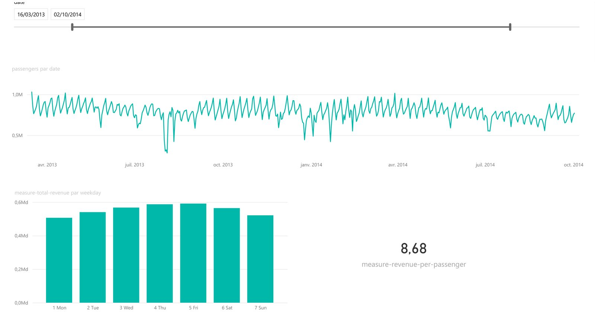
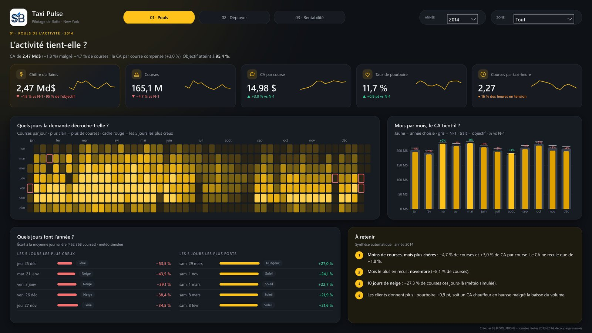
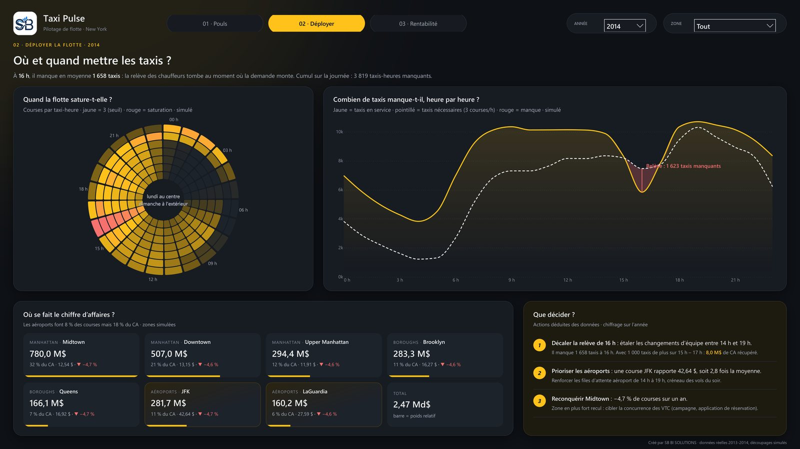
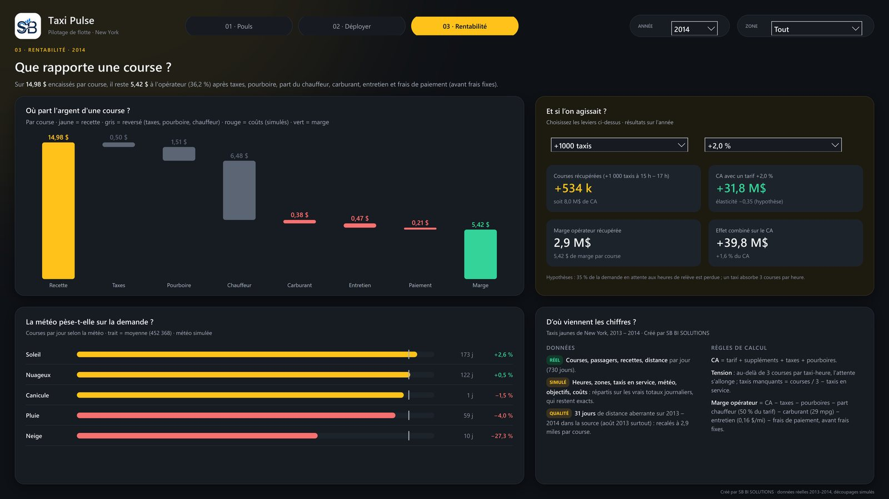

01 · AvantLe point de départ
Un rapport de cours : une seule table journalière, deux mesures et trois visuels par défaut (courbe des passagers, CA par jour de semaine, une carte KPI).
Il décrit l'activité mais ne répond à aucune question de pilotage : on ne sait ni où ni quand il manque des taxis, ni ce que rapporte une course.

02 · DémarcheCe que j'ai fait
- Poser trois questions de responsable de flotte : l'activité tient-elle ? Où et quand déployer ? Que rapporte une course ?
- Compléter les données réelles (journalières) par une simulation recalée sur les vrais totaux : découpage par heure et par zone, offre de taxis, météo, coûts.
- Construire 60 mesures DAX, une table de dates dédiée, des synthèses HTML qui se réécrivent avec les filtres et 5 visuels Deneb.
- Un thème sombre avec une seule couleur d'accent, le jaune taxi. Le vert et le rouge sont réservés aux écarts.
03 · RésultatCe que le rapport révèle
de courses en 2014, mais +3,0 % de CA par course : le CA ne recule que de 1,8 % (2,47 Md$).
La relève des chauffeurs tombe au moment où la demande monte : il manque environ 1 650 taxis chaque jour.
restent à l'opérateur sur 14,98 $ encaissés, après taxes, pourboire, chauffeur, carburant et entretien.
04 · Les pages3 pages, une question chacune



05 · VidéoLe rapport en mouvement
06 · TransparenceDonnées et limites
Données réelles : courses journalières des taxis jaunes de New York (2013-2014, jeu de données de cours). Le découpage par heure et par zone, la flotte, la météo et les coûts sont simulés, puis recalés sur les vrais totaux de chaque jour.
Un rapport comme celui-ci pour votre activité ?
Je pars de vos données et de vos décisions, puis je construis le modèle, les mesures et les pages qui y répondent.